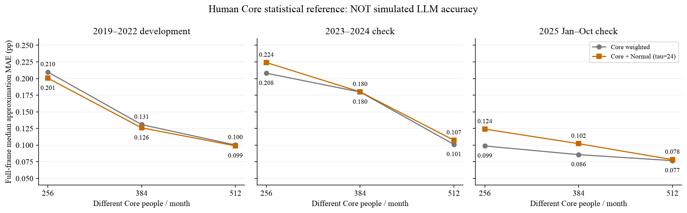
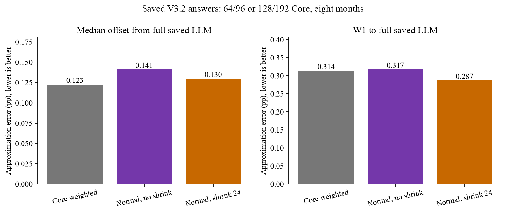
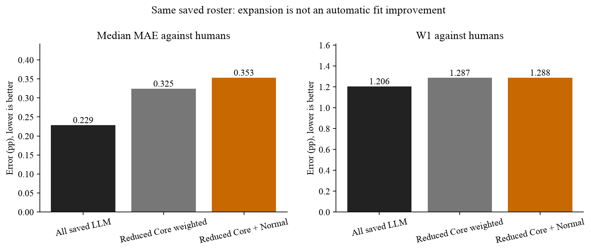

SCE · 水上挽月 · 2026-10-23 · 本轮新增API 0／Q9重新拟合 0
Core＋Normal：机制已可运行，调用节省与拟合代价仍需验证
1．本版到底怎么扩展
学历3档×数理2档×年龄3档×收入3档＝54个已知画像格；未知信息保留，新人／回访者分池。小格过采样；格内已有回答少时，向同入组类型、人口特征最接近的其他格借信息。年龄与收入的匹配地位对称，不预先指定哪个一定更重要。
每份供体保留完整十档Q9及原有Q8；不把平均概率复制给所有人。先用现有冻结口径取得个人Q9密度均值，再对跨人分布取加权中位数。Q8另用独立有效回答库，避免Q9失败连带删除Q8。
有限人口汇总：已取得的Core答卷按原人口质量保留，只扩Normal和明确标注的Core缺失字段。Core的抽样校正权重用于估计条件分布，不再作为另一份完整人口重复加入。全员都是合法Core时，必须精确还原原答卷分布。
局部答卷频率p、相近格经验先验H、有效Core人数n_eff对应α＝n_eff·p＋τ·H。主结果用归一化α直接积分答卷权重。因为采用调查权重有效人数和经验先验，这是加权经验贝叶斯／伪Dirichlet估计，不是完整的精确抽样似然；不能把Normal人数当新增独立证据。
2．真人Core留出：统计扩展本身会损失多少
2019-01—2025-10，82个月，每月256／384／512个Core、两个抽样种子。先按人口抽Core，再读取所选人的当前回答；剩余Normal才是留出对象。这里的Core使用真人答卷作为理想化统计参照，完全不是LLM输入或项目最终拟合成绩。

τ只在2019—2022开发期资料的Normal留出上按既定W1＋中心代价规则选择，三种规模均选择24；后期不再调参。各时期已有研究，非全新盲测。同一人可跨月出现，不能将这些人月视为独立样本。
增加Core通常降低对完整波次的近似误差，但收缩对后期总体中位数没有一致收益。总体汇总与Normal局部误差应分开看，不能用已知Core掩盖Normal预测不足。
3．已有V3.2回答留出：不付费检查是否保留原模型分布
八个月、两遍分别评价，从旧96／192人框架中抽64／128人作为Core，最低名额1。其余已保存的LLM回答仅用于检查扩展，不参与估计。这个小框架与全SCE波次的256人设计不同，不能替代真实小试。

仅Core加权→收缩扩展，对完整已保存LLM分布的W1为0.314→0.287pp；月中位数绝对偏移0.123→0.130pp。这是扩展近似误差，不能直接加到原有模型MAE上。

真人对照必须披露：对同一已保存人群的真人，Core＋Normal没有显示总体拟合改善。它的价值首先是节省调用、提供可标注来源的统计人口扩展；目前不能声称它提高模型本身的行为真实性。正常人群的本人先验依赖及逐人排序没有被该人口分布方法自动恢复。
4．下一步三月LLM小试：Core与审计人群分开
| 月份 | 有效权重人口框架 | Core调用 | 留出审计调用 | Core内新人 |
|---|---|---|---|---|
| 202109 | 1261 | 256 | 64 | 37 |
| 202206 | 1217 | 256 | 64 | 25 |
| 202506 | 1097 | 256 | 64 | 32 |
共最多960次，每人一遍。64人从Normal中另抽，仍属于Normal，只额外取得LLM答卷作审计，不加入Core估计。由此区分“LLM本来就不像真人”和“统计扩展又损失了什么”。同一批Core可离线比较多个τ，不重复调用。
已准备角色名册与权重；尚需接近期历史信念、完整P/E提示、精确缓存去重、官方Core干跑与预算授权。当前状态是roles_ready_not_prompt_or_api_ready。未启动小试或82月大批次，未承诺最终Core人数。
5．可复用入口与当前边界
python scripts/validate_sce_core_normal.py --out outputs/<新目录> python scripts/validate_sce_core_normal_cached.py --out outputs/<新目录> python scripts/expand_sce_core_normal.py --population <人口.json> --core <Core名册.json> --answers <已计分Core回答.json> --tau 24 --out outputs/<新目录> python scripts/prepare_sce_core_normal_pilot.py --out outputs/<新目录>
扩展入口不接受当期真人真值，不调用API或重新拟合Q9；已用缓存V3.2答卷跑通一次实际文件输入→人口分布输出。旧六格名单、默认模型输入和全部旧账本保持原版本。第一版全格后验预测已保留，有限人口版本增加了Core保留与全员Core还原检查，结果不覆盖。
冻结结果与复算证据
- outputs/sce_core_normal_human_20261023_v2
- outputs/sce_core_normal_cached_20261023_v2
- outputs/sce_core_normal_pilot_preparation_20261023_v1
源哈希在各summary中；缓存LLM与真人采用同一原有冻结计分，真人统计参照使用已有官方派生均值/IQR。没有用本期答案调人口权重。
完整技术说明 · 给Kimi的接口契约 · 当前任务板